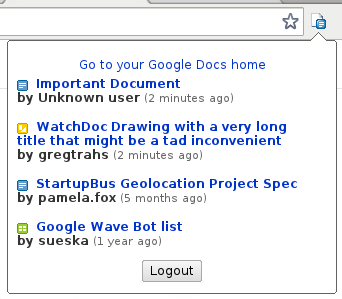

WatchDoc
by imrehg
WatchDoc
by imrehgIf you have shared some documents with others on Google Docs, before you had to go check whether anyone's modified them. This Chrome extension will list your shared documents that were updated since the last time you have viewed them.

Get it from the Chrome Web Store.
Any issues, questions, feature requests can be posted at the WatchDoc Get Satisfaction site.
If you are a programmer you can also check out the Github repo and send me a pull-request whenever you have some thing you want to share.
Email to Gergely Imreh or check my blog.
You can also clone the project with Git by running:
$ git clone git://github.com/imrehg/WatchDoc